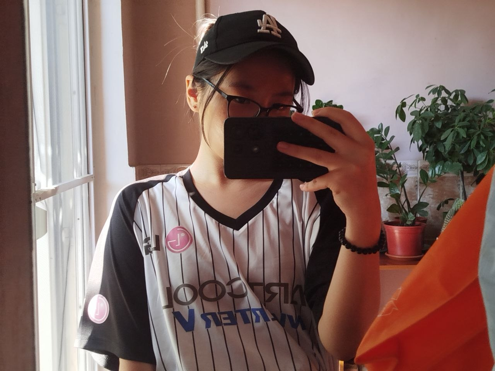
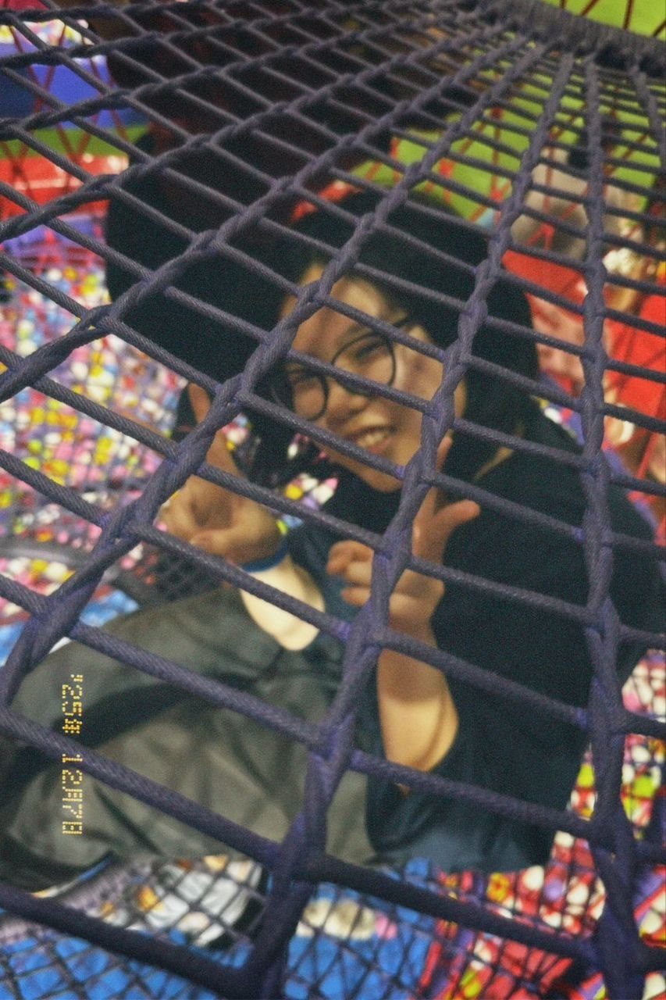
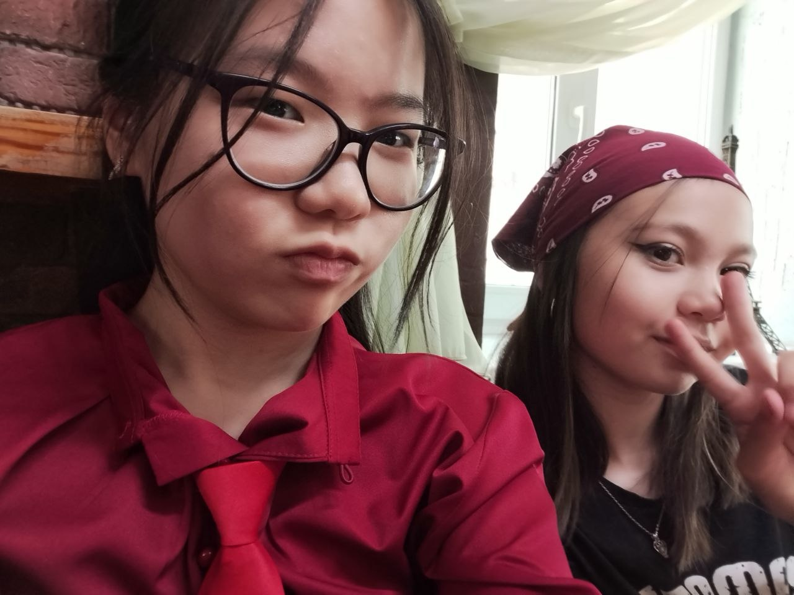
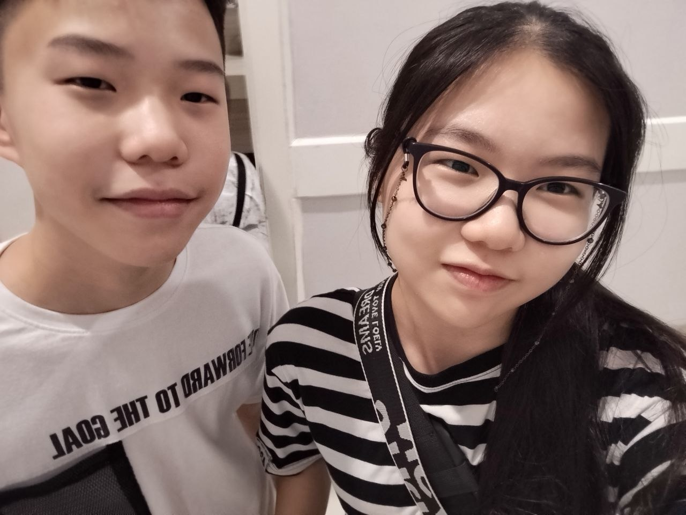
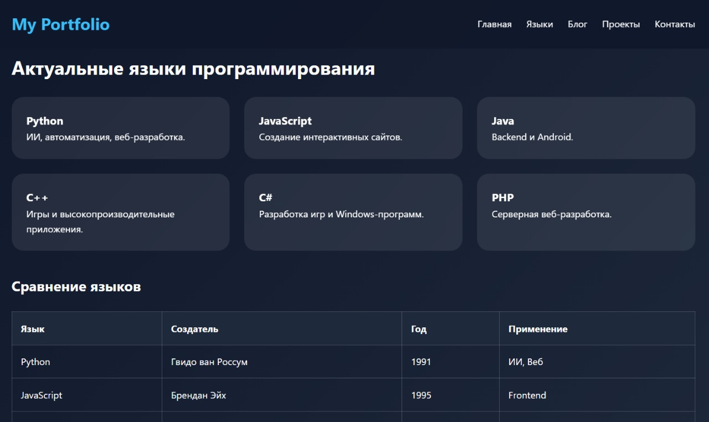
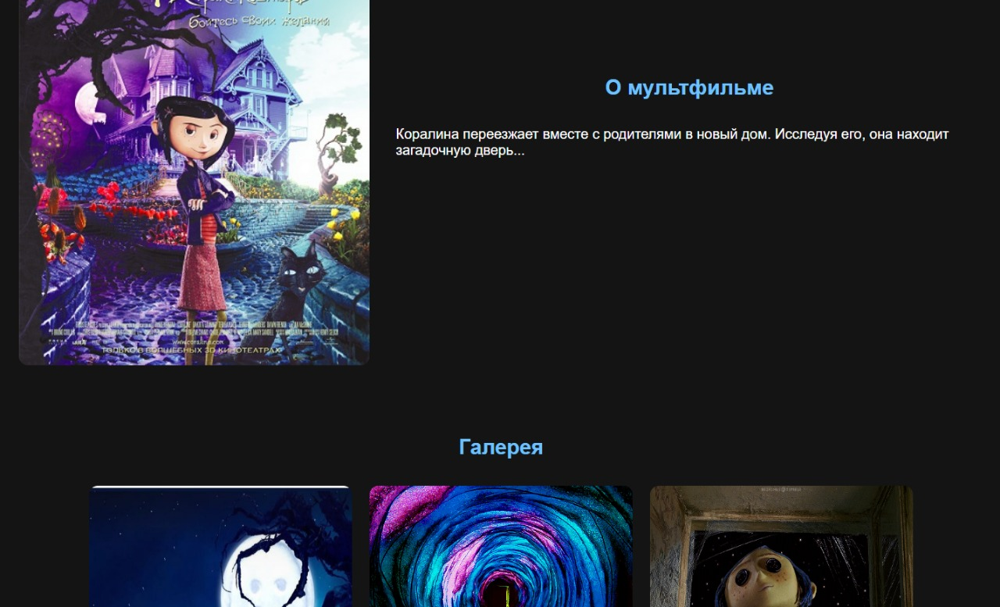
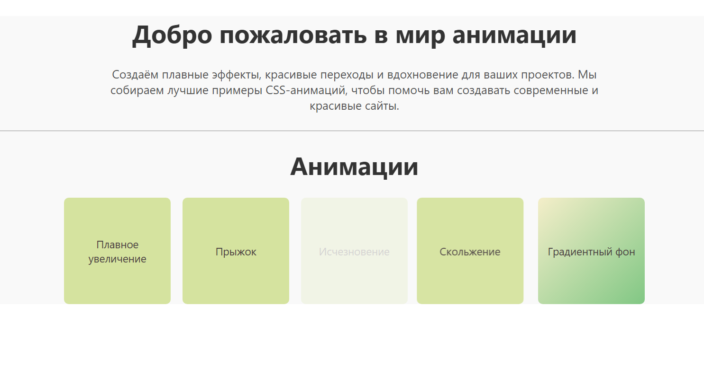

Моё портфолио для конкурса «ОБО МНЕ» от CapEducation
НачатьВ свободное время я люблю читать книги разных жанров: классику, фэнтези, романтику, а также манги, манхвы и манхуи, если хочу лучше расслабиться. Мне нравится узнавать что-то новое и постоянно развиваться.


Летнее фото, сделала в свой день рождение!
Лицо немного закрыто, я знаю.

Эта фотография была сделана во время прогулки в парке вместе с моей компанией друзей. Мы отлично провели время, много смеялись и создали ещё одно тёплое воспоминание, которое останется со мной надолго.

На этой фотографии моя лучшая подруга. Мы дружим уже больше восьми лет, и за это время она стала для меня очень близким человеком. Я ценю её поддержку, доброту и все счастливые моменты, которые мы пережили вместе.

Это мой братишка, который "младше" меня всего на одну минуту. Иногда мы ссоримся, как и многие братья и сёстры, но быстро миримся и забываем обиды. Мы любим вместе играть в видеоигры, смотреть интересные видео на YouTube и фильмы под вкусняшки. Кроме него у меня есть 2 старших.
В будущем я хочу успешно сдать ЕНТ, поступить в хороший университет и выбрать профессию, которая будет мне действительно интересна. Для меня важно не только получить хорошую работу, но и заниматься тем делом, которое приносит удовольствие и пользу.

На встрече я узнала больше о программе и различных направлениях обучения. Особенно меня заинтересовала веб-разработка, поэтому я решила выбрать именно её.

Он всегда готов помочь, если возникают вопросы, и поддерживает нас в обучении.
Специально я обратилась к своему ментору, чтобы он побольше представился, ниже текст.
"Меня зовут Арыстан. Проживаю в городе Астана и закончил обучение в Astana IT University, по программе “Big Data Analysis”. Люблю заниматься в тренажерном зале, и слушать музыку."
Вот такую вот интересную информацию мы получили от него!


 Это мои макеты в Figma.
Он помог мне понять основы дизайна и структуру интерфейсов
Это мои макеты в Figma.
Он помог мне понять основы дизайна и структуру интерфейсов


